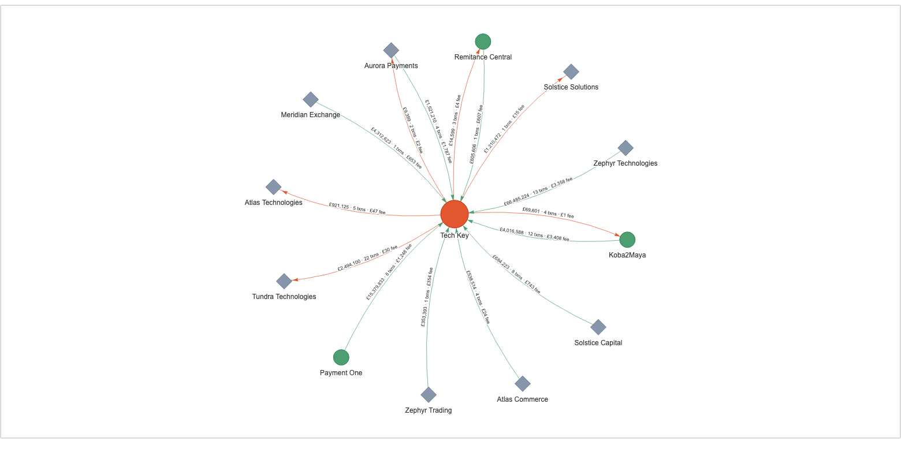

Bronze → Silver → Gold in a single DuckDB file: from four raw sources to a graph-ready Gold dataset, with every number traceable back to an untouched source row.
“Who is moving how much money with whom, and when? And what revenue did we earn on it?”
DuckDB shares the catalog.schema.table namespace with Databricks, but a DuckDB
catalog is a physical file, so the “catalog per layer” idiom would need three attached files and break
the single-file constraint. So layers map to schemas; if the rule were lifted, they lift mechanically
to catalogs (ATTACH 'bronze.duckdb') with schema names unchanged.
Keep the raw fact pure. Facts land once in Bronze live; FX attaches as a
separate keyed table, never as columns bolted onto the fact. Lineage back to an untouched source row is what makes
row and measure counts checkable at every layer boundary.
Tx Date + Tx Time; fees at their date). Cross-currency totals only compare if each amount is priced at its own momentsrc/fx.py): sorts the unsorted rate points once, range-matches validFrom ≤ t < validTill by bisect; independently tested with neither DuckDB nor the 18 MB filefx_rate_id of the exact rate point that priced itAnything unpriceable is quarantined with a stated reason: kept and auditable, never dropped or null-filled:
fx_out_of_coverage | instant outside the file's window |
fx_unknown_currency | no series for the currency |
fx_no_rate_point | gap in the series at that instant |
fx_missing_currency | row has no currency |
fx_missing_instant | row has no settlement instant |
Splitting “which rate” (core) from “apply the rate” (shape) separates the two ways FX can go wrong into two inspectable stages.
| What the data threw up | Count | Verdict | Why |
|---|---|---|---|
| Fees with no currency | 42 | quarantined | unpriceable (fx_missing_currency); this is the entire quarantine ledger |
| Transaction IDs in both Deposit & Withdrawals | 306 | kept | distinct streams reusing IDs; fees key on (link_id, fee_type) so nothing fans out |
| Counterparties with no group/company key | 1,363 | kept | standalone by design → diamond nodes, exactly as the brief expects |
| Counterparties with a key | 222 | kept | all resolve deterministically to a group with zero orphans; no name-matching needed |
| Duplicate fact key within a stream | 0 | would fail loud | unique key asserted before pricing; a dup would inflate volume and fan out fees |
| Null amounts · out-of-period rows | 0 | quarantine · fail loud | null amount → quarantined like a bad currency; out-of-period → Bronze raises. Enforced, not just observed, so the next drop can't slip a bad row through |
Conservation gates the build: per-month rows sum to live · promoted + quarantined = input ·
the 12,982 transactions land in curated.edge uncounted-out · GBP totals unchanged Silver → Gold. Any breach turns make test red.
curated drives the graph directly, with zero reshaping
make render → this star map, read straight from curated.node + curated.edge:
focal group Tech Key, top-12 counterparts by volume, full period.
circles = groups (group↔group flow is first-class: 449 such edges)
diamonds = standalone counterparties ·
directed edges labelled £ volume · txn count · fee revenue (green in, orange out).
WHERE clause awaymonth and year. The month grain is additive, so year and full-period views are plain roll-ups by summationfocal_group_id and focal_company_id (+ its name). The fact is stored at the finest company grain, so the group view is the sum of its companies, and the drill is recoverable, not lostnotebooks/drill.ipynb): star view → named legal entities → one company's own counterparts → roll-up reconciles to the penny
Group grain: who does Koba2Maya, as a whole, move money with?
↓ drill: which of its 18 legal entities transacted: two separate entities
both named “Operations Ltd” (£66m and £18m), “Group Holdings £6.7m”…
↓ drill: who did the £66m entity itself deal with?
↑ roll up: the group total equals the sum of its companies; drill is lossless.
Hierarchy comes from deterministic keys only
(dc_id → company → parentGroup), so there's no name-matching and no guessing. Names duplicate
across jurisdictions; the id is the key, the name is just the label.
Swap the ingestion source. build_raw_monthly reads a sheet today; replace that one function with a stream consumer appending events to the Bronze raw month partition. Nothing downstream of live needs to know.
Make Bronze writes append-only and idempotent. INSERT … ON CONFLICT DO NOTHING on the natural key, so at-least-once delivery and replays can't double-count.
Process incrementally. Watermark the new rows; money_flow is additive on its grain, so a micro-batch is an upsert into the affected month's aggregate, not a full rebuild.
Refresh FX as a live dimension. A late-arriving rate point re-prices rows quarantined as fx_no_rate_point, so nothing stays stuck.
Unchanged: the FX unit, the JSON unpicking, the network model, the quarantine rules, the conservation checks. The transformation logic never cared whether a row came from a sheet or a stream.
fx_* columns on the fact (mutates the raw fact, collapses two failure modes into one).curated reads only data_mart).group_id, else dc_id → company → group): zero orphans found, so no fragile name-matching anywhere.live.deposit, not deposits), keeping one naming convention across all six schemas; the protocol's substance (one consolidated table per stream) is unchanged.make pipeline rebuilds the committed warehouse from scratch, deterministically: same totals every runsource lists) and FX lineage (fx_rate_id) on every Gold rowThe reference snapshot is from a different data drop: its figures don't exist in this data, so it guided shape, not numbers. Whether any snapshot figure is a validated reference for a named group and period is the single question worth an email; everything else was resolvable from the data.
curated